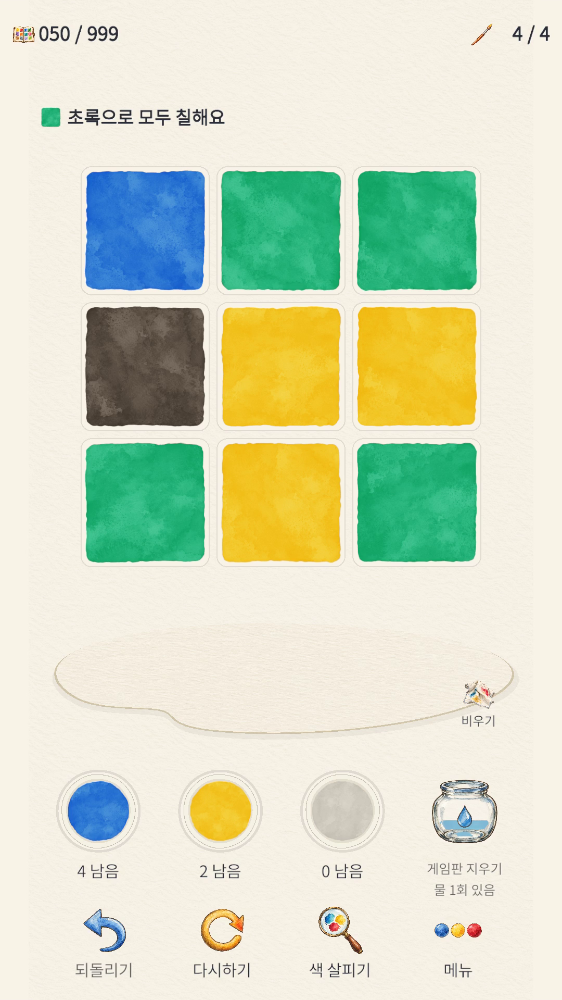
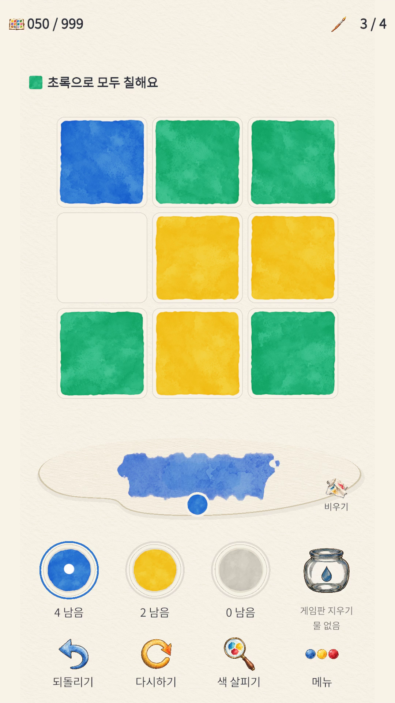
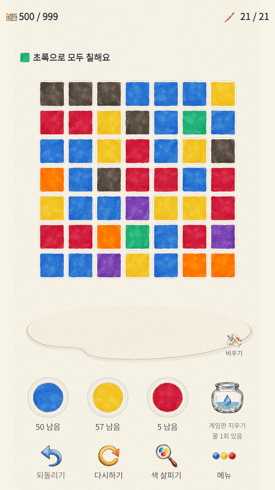

물감 한 방울, 새로운 해답.A little colour. A new way through.ひとしずくの絵の具、新しい答え。一滴颜料，一种新解法。一滴顏料，一種新解法。
Palette
of Water
색을 섞고,
생각을 물들여요.Mix colours.
Let the answer bloom.色を混ぜて、
答えを咲かせよう。混合色彩，
让答案绽放。混合色彩，
讓答案綻放。
수채화 종이 위에서 빨강, 노랑, 파랑을 섞는 색 혼합 퍼즐. 남은 물감과 붓질 안에서 보드를 한 가지 색으로 완성해 보세요. 지정된 목표색이 있는 판도 있어요.A colour-mixing puzzle on watercolour paper. Blend red, yellow and blue, and make the board one colour within your paint and move limits. Some stages ask for a specific colour.水彩紙の上で赤・黄・青を混ぜる色のパズル。限られた絵の具と手数で盤面を一色にそろえましょう。色が指定されるステージもあります。在水彩纸上混合红、黄、蓝的调色解谜游戏。利用有限的颜料与笔数，让棋盘变成同一种颜色。部分关卡会指定目标颜色。在水彩紙上混合紅、黃、藍的調色解謎遊戲。利用有限的顏料與筆數，讓棋盤變成同一種顏色。部分關卡會指定目標顏色。
Google Play 심사 중Under Google Play reviewGoogle Play 審査中Google Play 审核中Google Play 審核中
1–30 스테이지 · 무료 브라우저 튜토리얼 데모. 진행은 이 브라우저에 저장되며 Android와 연동되지 않습니다.Stages 1–30 · free browser tutorial demo. Progress is saved in this browser, separately from Android.ステージ1–30・無料ブラウザチュートリアルデモ。進行はこのブラウザに保存され、Androidとは同期されません。第1–30关 · 免费浏览器教学试玩。进度保存在此浏览器中，不与Android同步。第1–30關 · 免費瀏覽器教學試玩。進度儲存在此瀏覽器中，不與Android同步。

색을 섞는 세 단계THREE STEPS TO A NEW SHADE新しい色へ、3つのステップ调出新色的三个步骤調出新色的三個步驟
조금씩 섞으며,
해답으로.A few simple moves.
A different way to think.少しずつ混ぜて、
答えに近づく。一点点混合，
一步步找到答案。一點點混合，
一步步找到答案。
팔레트에서 섞어요Mix on the paletteパレットで混ぜる在调色盘上混色在調色盤上混色
빨강, 노랑, 파랑 물감을 눌러 팔레트에 원하는 색을 만들어요. 다른 색을 만들고 싶으면 팔레트를 비우고 다시 섞어보세요.Tap red, yellow and blue paint to prepare a colour on your palette. Clear the palette when you want to mix a different colour.赤・黄・青の絵の具をタップし、パレットで色を作ります。別の色を作るときはパレットを空にして混ぜ直しましょう。点击红、黄、蓝颜料，在调色盘上调出想要的颜色。想换一种颜色时，先清空调色盘再重新调色。點擊紅、黃、藍顏料，在調色盤上調出想要的顏色。想換一種顏色時，先清空調色盤再重新調色。
연결된 영역을 칠해요Paint a connected regionつながったエリアを塗る为相连区域上色為相連區域上色
보드의 한 칸을 누르면 상하좌우로 이어진 같은 색의 칸들이 함께 칠해져요. 팔레트의 물감이 보드의 기존 색과 섞이니, 영역 크기와 남은 물감을 살펴보세요.Tap a tile to paint the matching-colour region connected above, below, left and right. Your palette colour mixes with the paint already there, so consider the region size and remaining paint.マスをタップすると、上下左右につながった同じ色のマスをまとめて塗れます。パレットの絵の具は盤面の色と混ざります。エリアの大きさと残りの絵の具を確かめましょう。点击一个方格，上下左右相连的同色区域会一起上色。调色盘上的颜料会与棋盘原有的颜色混合，请注意区域大小和剩余颜料。點擊一個方格，上下左右相連的同色區域會一起上色。調色盤上的顏料會與棋盤原有的顏色混合，請注意區域大小和剩餘顏料。
한 가지 색으로 완성해요Bring the board together盤面を一色にそろえる让棋盘变成同一种颜色讓棋盤變成同一種顏色
정해진 물감과 붓질 안에서 모든 칸을 한 가지 색으로 맞춰요. 목표색이 지정된 스테이지에서는 그 색으로 완성하세요.Make every tile the same colour within the available paint and moves. If the stage specifies a target colour, finish with that colour.決められた絵の具と手数で、すべてのマスを一色にそろえます。目標の色が指定されたステージでは、その色で完成させましょう。在有限的颜料与笔数内，让所有方格变成同一种颜色。如果关卡指定了目标颜色，就用该颜色完成。在有限的顏料與筆數內，讓所有方格變成同一種顏色。如果關卡指定了目標顏色，就用該顏色完成。
색 살피기로 색을 확인하고, 되돌리기로 한 수를 다시 생각해 보세요. 물이 남아 있다면 선택한 영역의 물감을 지울 수도 있어요.Inspect a colour or undo a move to rethink it. If you have water left, you can also clear the paint from a selected region.色を確認したり、一手戻って考え直したりできます。水が残っていれば、選んだエリアの絵の具を消すこともできます。查看颜色，或撤销一步重新思考。如果还有水，也可以清除所选区域的颜料。查看顏色，或復原一步重新思考。如果還有水，也可以清除所選區域的顏料。
아래 이미지와 영상은 999 스테이지 본편을 소개합니다. 브라우저 데모의 범위는 1–30 스테이지입니다.The images and videos below preview the 999-stage full game. The browser demo is limited to stages 1–30.以下の画像と動画は全999ステージの本編紹介です。ブラウザデモはステージ1–30です。下方图片与视频介绍999关完整版。浏览器试玩仅包含第1–30关。下方圖片與影片介紹999關完整版。瀏覽器試玩僅包含第1–30關。
종이 위의 퍼즐ON THE PAPER紙の上のパズル纸上的谜题紙上的謎題
한 번의 색 혼합에서,
500번째 스테이지까지.From a single mix
to stage 500.ひとつの色の混合から、
500番目のステージまで。从一次调色，
到第500关。從一次調色，
到第500關。
실제 게임 화면으로 만나는 물감과 퍼즐. 아래 화면은 각각 스테이지 50과 500입니다.Pigments and puzzles, shown in actual gameplay. These screens are from stages 50 and 500.実際のゲーム画面で見る絵の具とパズル。以下はステージ50と500の画面です。通过实际游戏画面感受颜料与谜题。下方分别为第50关和第500关。透過實際遊戲畫面感受顏料與謎題。下方分別為第50關和第500關。


이미지와 영상은 실제 Unity Editor 게임플레이를 자동 풀이로 재생해 촬영했습니다. 휴대전화에서 촬영한 화면이 아닙니다.Images and videos show actual Unity Editor gameplay recorded from automated solution replays, not phone captures.画像と動画は、実際のUnity Editor上のゲームプレイを自動解法リプレイで収録したものです。スマートフォンでの撮影ではありません。图片与视频来自 Unity Editor 中实际游戏的自动解题回放，并非手机录屏。圖片與影片來自 Unity Editor 中實際遊戲的自動解題回放，並非手機錄影。
움직이는 색COLOUR IN MOTION動き出す色流动的色彩流動的色彩
한 수씩,
색이 바뀌는 과정.Watch each move
change the picture.一手ごとに、
色が変わっていく。看每一步，
如何改变颜色。看每一步，
如何改變顏色。
선택한 언어의 공식 플레이 영상입니다. 스테이지 10, 50, 100, 300, 500, 999의 진행을 볼 수 있습니다.Official gameplay in your selected language, following stages 10, 50, 100, 300, 500 and 999.選択中の言語による公式プレイ映像です。ステージ10・50・100・300・500・999の進行を紹介します。与所选语言对应的官方演示，展示第10、50、100、300、500和999关的过程。與所選語言對應的官方演示，展示第10、50、100、300、500和999關的過程。
Palette of Water
버튼을 누르면 YouTube 외부 플레이어에 연결됩니다. 자동 재생하지 않습니다.Loads an external YouTube player only when you choose. No autoplay.ボタンを押したときだけYouTubeの外部プレーヤーに接続します。自動再生はしません。仅在点击后连接外部 YouTube 播放器，不会自动播放。僅在點擊後連接外部 YouTube 播放器，不會自動播放。
이미지와 영상은 실제 Unity Editor 게임플레이를 자동 풀이로 재생해 촬영했습니다. 휴대전화에서 촬영한 화면이 아닙니다.Images and videos show actual Unity Editor gameplay recorded from automated solution replays, not phone captures.画像と動画は、実際のUnity Editor上のゲームプレイを自動解法リプレイで収録したものです。スマートフォンでの撮影ではありません。图片与视频来自 Unity Editor 中实际游戏的自动解题回放，并非手机录屏。圖片與影片來自 Unity Editor 中實際遊戲的自動解題回放，並非手機錄影。
다음 소식을 기다리며.A little more colour, soon.次のお知らせをお楽しみに。期待下一抹色彩。期待下一抹色彩。
Google Play 심사 중Under Google Play reviewGoogle Play 審査中Google Play 审核中Google Play 審核中
Palette of Water는 현재 Google Play 심사 중입니다. 출시 소식이 정해지면 이 페이지에서 알려드릴게요.Palette of Water is currently under Google Play review. Release news will appear here when available.Palette of Waterは現在Google Playの審査中です。リリースのお知らせは、決まり次第このページに掲載します。Palette of Water 目前正在接受 Google Play 审核。确定上线消息后，我们会在此页面公布。Palette of Water 目前正在接受 Google Play 審核。確定上線消息後，我們會在此頁面公布。
FNDG의 다른 게임 보기Explore more from FNDGFNDGのほかのゲームを見る探索 FNDG 的其他游戏探索 FNDG 的其他遊戲